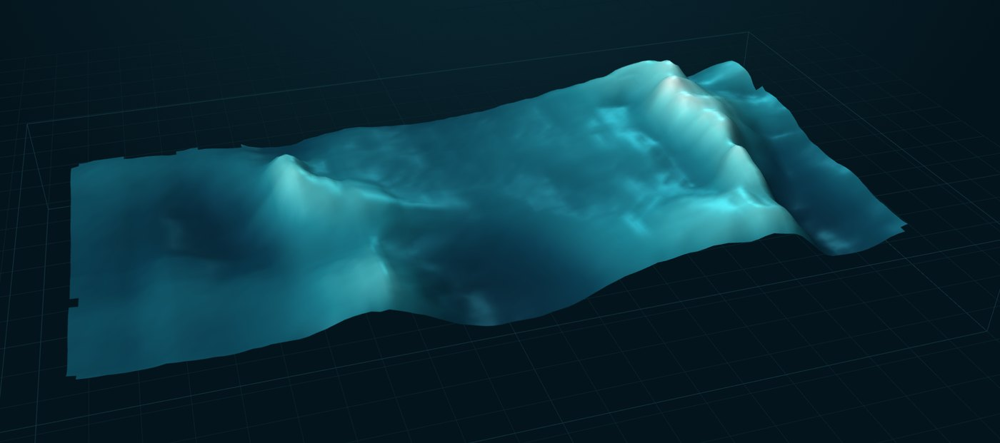

Physically grounded 4D reconstruction of fluids and waves
Reconstructing moving water in 3D over time from only a few cameras, for coastal-hazard monitoring. The goal is a reconstruction that is accurate and physically grounded, so that wave heights and how the water evolves can be read from it.